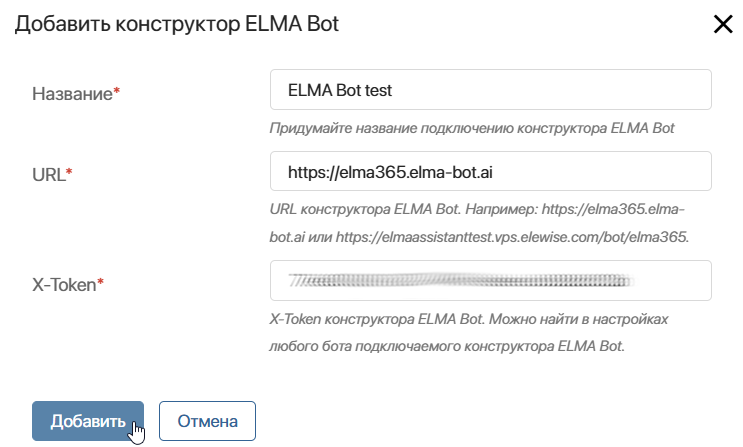
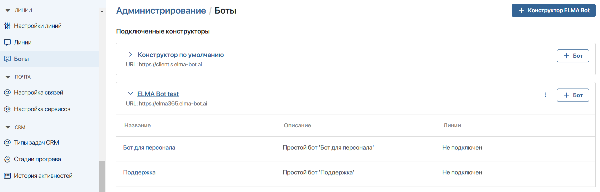

Чтобы подключать к линиям ботов, созданных в конструкторе ELMA Bot, настройте интеграцию одним из следующих способов:
Такой вариант подключения доступен для всех поставок ELMA365. Он выполняется в разделе Администрирование > Линии > Боты. При этом способе интеграции пользователи ELMA365 должны быть предварительно авторизованы в конструкторе ELMA Bot, чтобы переходить в него по ссылкам из настроек линии или раздела Администрирование > Линии > Боты.
Для редакции ELMA365 On‑Premises Standard, установленной в Kubernetes‑in‑Docker (KinD), вы можете настроить интеграцию с конструктором ELMA Bot только через его Х-токен.
Если вы используете поставку ELMA365 On‑Premises, установленную в Kubernetes‑кластер, вы можете настроить интеграцию на уровне Helm‑чартов. Тогда пользователи ELMA365 будут автоматически авторизовываться в конструкторе ELMA Bot при переходе по ссылкам из настроек линии или раздела Администрирование > Линии > Боты.
Интеграция при помощи Х-токена конструктора ELMA Bot
При активации решения ELMA365 Service во всех поставках ELMA365 можно подключить конструктор ELMA Bot с помощью его Х‑токена. После этого в настройках линий станут доступны боты подключённого конструктора.
Чтобы подключить конструктор ELMA Bot, выполните шаги:
- В ELMA365 перейдите в Администрирование > Линии > Боты.
- В правом верхнем углу страницы нажмите + Конструктор ELMA Bot.
- В открывшемся окне заполните поля:

- Название* — укажите название подключения конструктора ELMA Bot;
- URL* — откройте ELMA Bot в браузере и скопируйте его адрес из адресной строки. Например:
- https://elma365.[адрес ELMA Bot] — для режима с поддоменами;
- https://[адрес ELMA Bot]/elma365 — для режима с подпутями.
Режимы определяются при установке конструктора ELMA Bot. Подробнее об этом читайте в статье «Установка ELMA Bot в Kubernetes»;
- X-Token* — токен конструктора ELMA Bot. Он указан на вкладке API любого бота, который создан в конструкторе ELMA Bot.
- Нажмите Добавить. Теперь ботов подключённого конструктора можно выбрать в настройках линии.
Интеграция при помощи микросервиса Hydra
Если ELMA365 On‑Premises и ELMA Bot On‑Premises установлены в Kubernetes‑кластер при помощи Helm‑чартов, вы можете подключить конструктор ELMA Bot, используя микросервис Hydra. Для этого выполните следующие условия:
- cо стороны ELMA365:
- установить с TLS;
- настроить сервисы
elmabot-proxy,hydra-adaptor,settings; - активировать лицензии платформы и ELMA365 Service;
- cо стороны ELMA Bot:
- включить провайдер авторизации (сервис Hydra);
- настроить параметры
global.elma365Integration.
Затем задайте настройки интеграции.
Пример настройки интеграции ELMA365 и ELMA Bot
elmabot-proxy:
global: |
После настройки интеграции ELMA Bot с ELMA365, вы можете подключать ботов к линиям.
Страница с подключённым конструктором ELMA Bot
Когда интеграция с конструктором ELMA Bot настроена, вы можете посмотреть, какие боты есть в конструкторе и к каким линиям они подключены. Для этого перейдите в ELMA365 и в разделе Администрирование > Линии > Боты нажмите значок рядом с названием конструктора ELMA Bot, чтобы развернуть таблицу и увидеть список его ботов.

Если интеграция с ELMA Bot настроена через микросервис Hydra, на странице отобразится Конструктор по умолчанию. Для конструктора ELMA Bot, который подключён к ELMA365 через Х‑токен, название задаётся при настройке интеграции.
Напротив названия подключённого конструктора ELMA Bot можно использовать следующие опции:
- нажмите значок трёх точек и выберите:
- Редактировать — изменить название настроенного подключения;
- Удалить — разорвать связь с конструктором. Тогда боты станут недоступны в линиях.
Эти действия доступны только для конструктора ELMA Bot, который подключён к ELMA365 через Х‑токен.
- + Бот — перейти в конструктор ELMA Bot, чтобы создать нового бота.
Вы также можете открыть страницу любого бота. Для этого нажмите на его название. Если бот подключён к линии, доступна ссылка для перехода в её настройки.